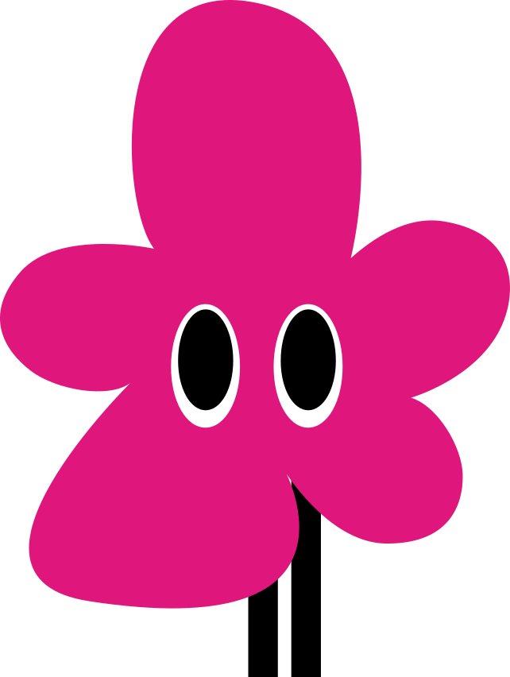

Cada día empieza en 0 · Favorable +15 · Poco favorable −5 · Desfavorable −15
No se pudo guardar en este navegador. Puedes seguir jugando mientras mantengas esta página abierta.
Combinar alimentos variados, movimiento, higiene y descanso ayuda a construir hábitos que cuidan de ti.
La barra representa el bienestar de nuestra mascota dentro del juego. No mide tu salud real ni define cómo debes sentirte.
Puedes tomar nuevas decisiones cada día. Una elección no define a una persona.
Se borrarán las decisiones guardadas en este juego y volverás al lunes.